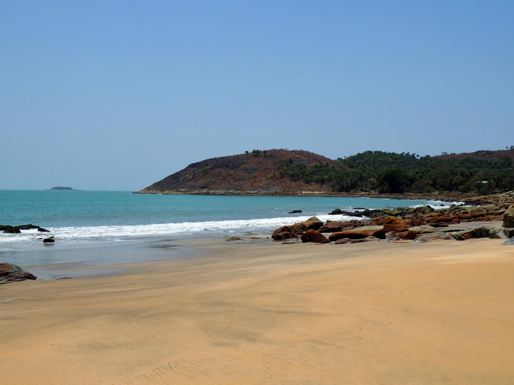
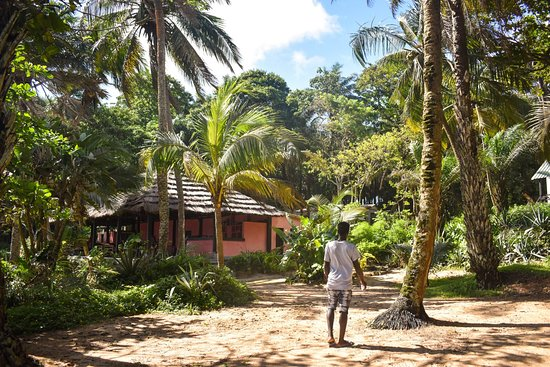
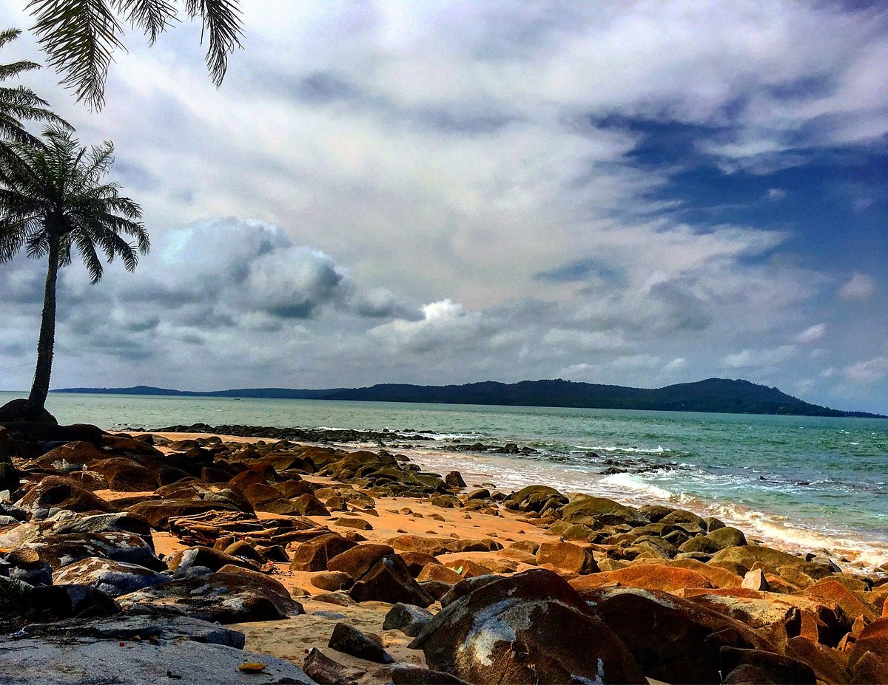
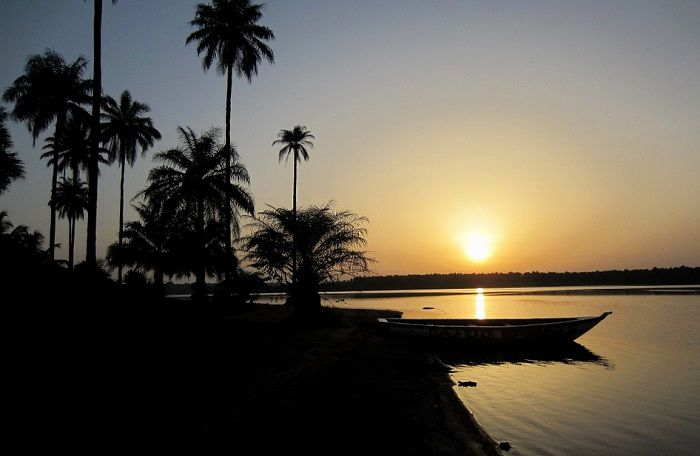
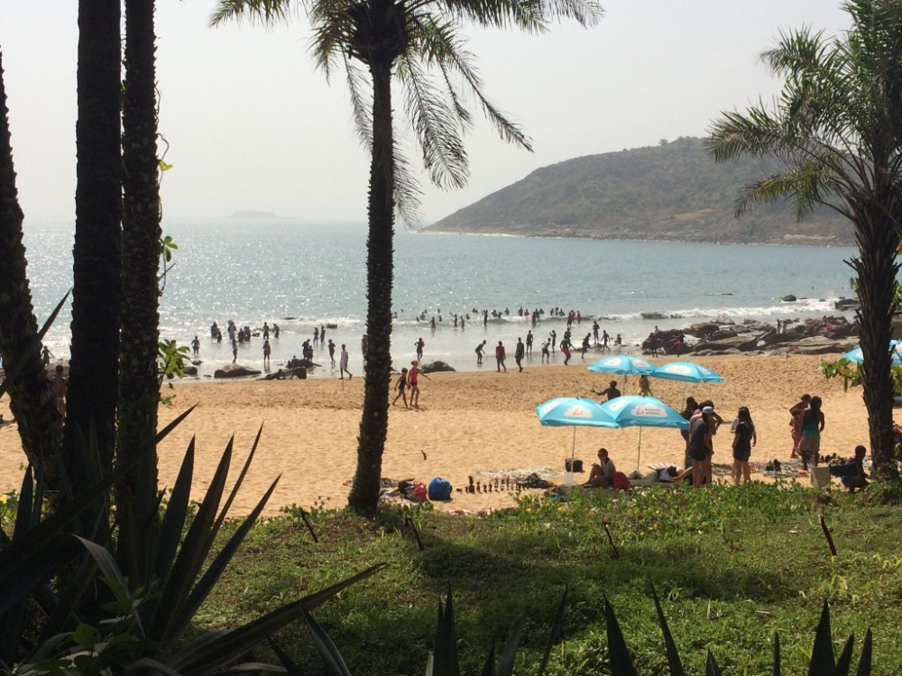
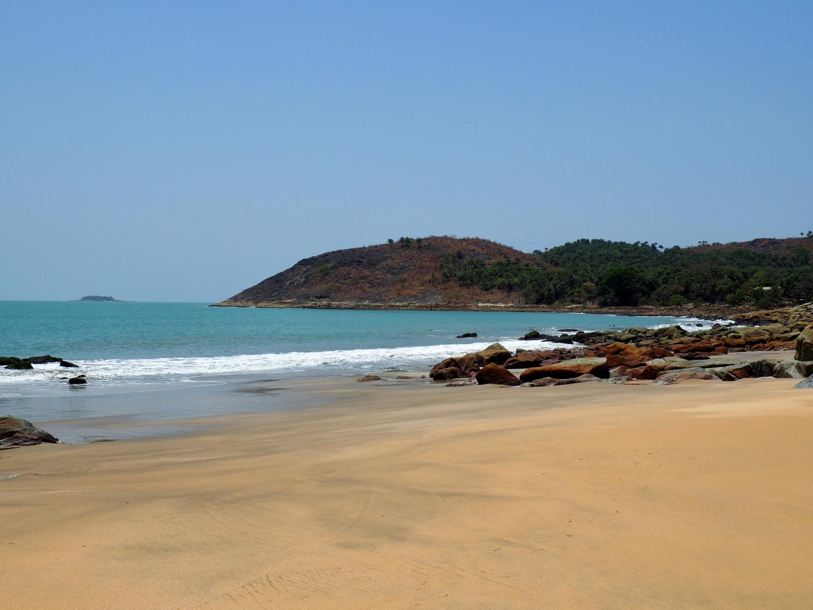
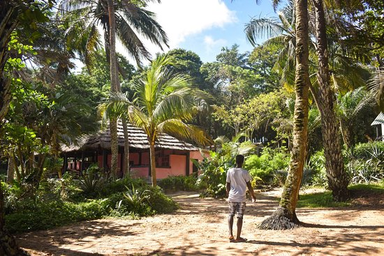
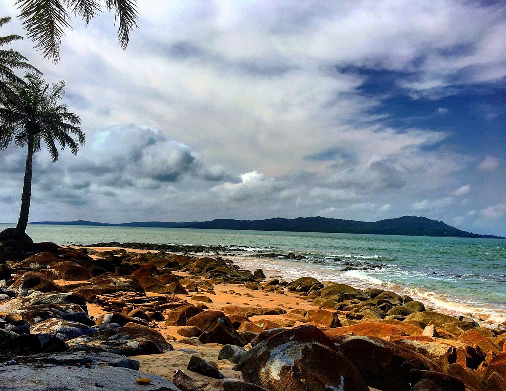
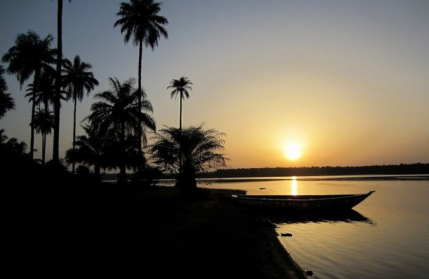
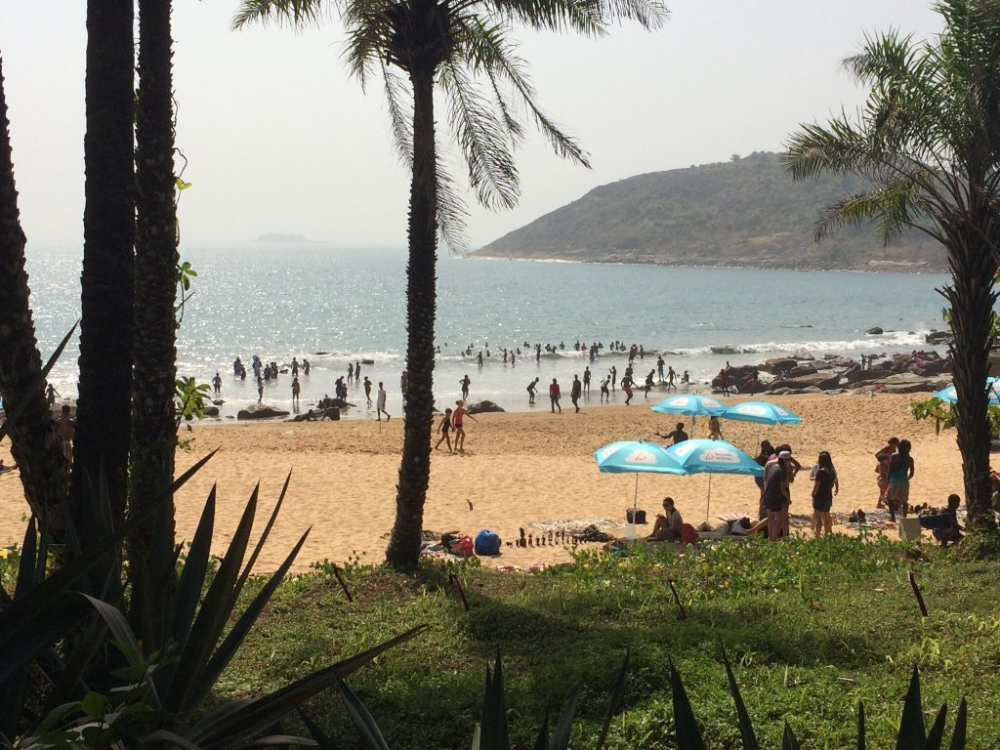
L'île de Roume (anciennement appelé Room ou Crawford Island) ou est l'une des trois principales îles de l'archipel de Loos en Guinée. Les anglo-saxons l'appelait « Crawford Island », du nom d'un banc de sable au nord de l'île qui apparait à marée basse. Ce banc de sable a pris le nom d'un négrier réfractaire pendu sur l'ile de Roume par les Anglais. Les francophones l’appelaient Roume du nom d'un gouverneur général de l’AOF (Afrique Occidentale Française) en poste entre 1902 et 1907. Cette orthographe est adoptée à l’indépendance de la Guinée en 1958. Les habitants principalement Sierra-Léonais, anglophones, l’appelaient phonétiquement Room avant cette décision.
Un fortin a été construit par les Anglais sur une des collines de l'ile au début du xixe siècle3. Il servait de base aux opérations contre les navires négriers français de la région3. L'île de Roume est l'une des nombreuses îles réputées pour avoir inspiré le roman de L'Île au trésor de Robert Louis Stevenson. Cette histoire, même si elle est plausible, ne repose sur aucune base historique, bien que relayée dans les guides touristiques.
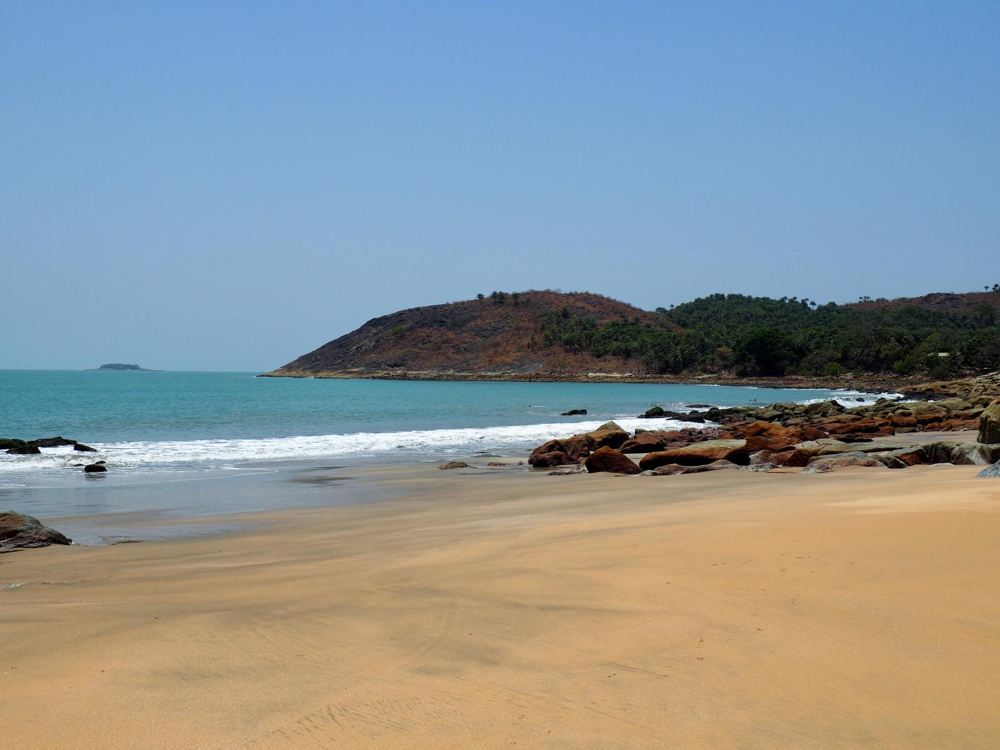
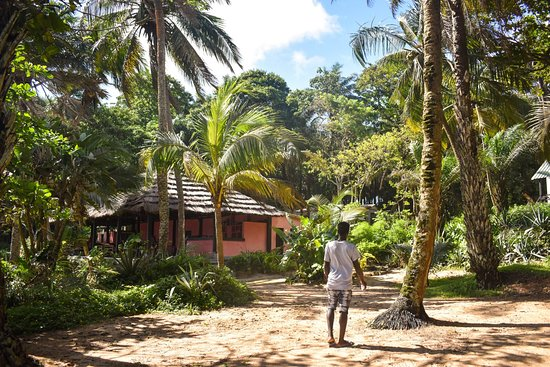
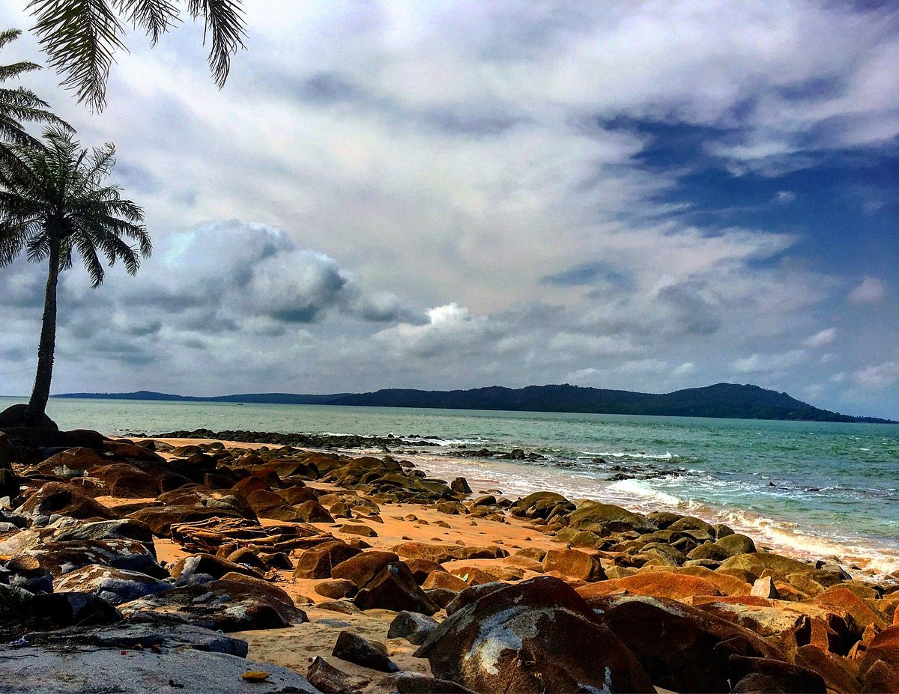
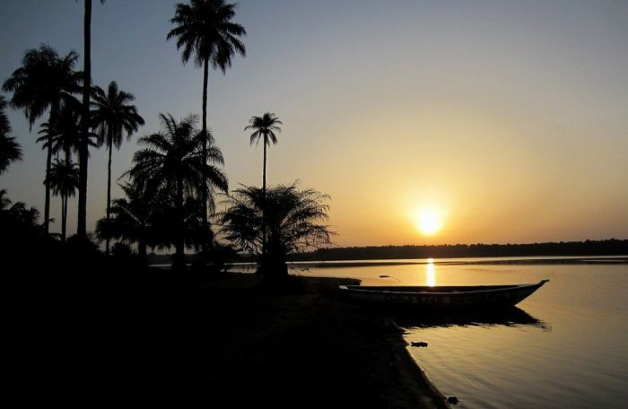
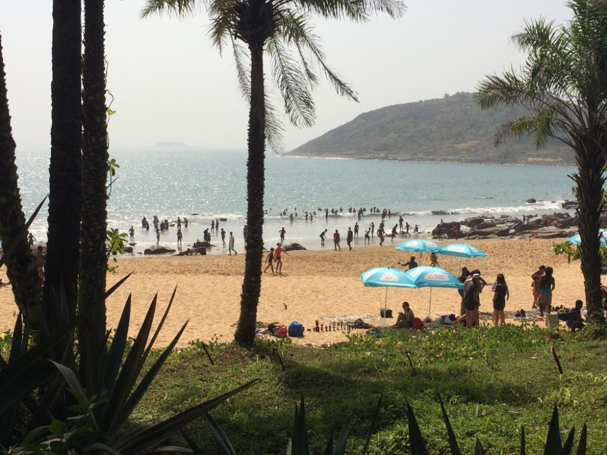